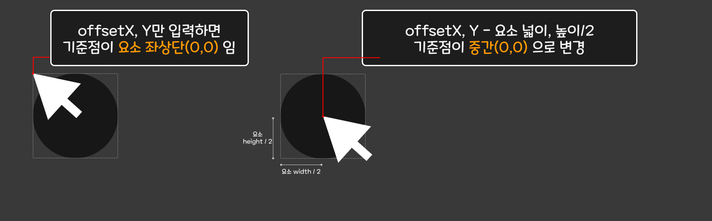

마우스 효과 03
저번과 마찬가지로 GSAP를 활용해 볼 예정입니다.
JS 소스
const cursor = document.querySelector(".mouse__cursor");
// 원의 width값 구하기
// const circleW = cursor.offsetWidth; //200
// const circleH = cursor.offsetHeight; //200
// const circle2 = cursor.clientWidth; //190 : 보더값 제외
//요새는 이걸 많이 씀. 각종값을 객체로 반환
const circle = cursor.getBoundingClientRect();
console.log(circle);
// {x: 0, y: 0, width: 200, height: 200, top: 0, …}
window.addEventListener("mousemove", (e) => {
gsap.to(cursor, {
duration: 0.3,
left: e.pageX - circle.width / 2,
top: e.pageY - circle.height / 2,
});
});
■ 핵심 찍먹하기🪓
✔ GSAP
CDN으로 항상 스크립트가져오셔야해요!
gsap.to ()에는 2가지 필수값이 필요합니다. 바로 대상과 속성입니다.
그렇다면 우리 소스에서는 어떻게 작동하는걸까요?
사용된 속성은 다음과 같습니다.
- duration : 애니메이션의 지속시간을 설정합니다. 0.3s로 지정했는데 이 지속시간이 계속 누적되어 진행되므로 마치 마우스가 천천히 따라오는듯한 효과를 내는 것입니다. - left: e.pageX, top : e.pageY : 이제는 다들 아시겠지만 CSS에 left와 top값을 부여했었는데요. 이 값을 pageX,Y(문서 상단 경계 기준으로 좌표값 추출)만큼 이동시킵니다.
아직도 GSAP는 왜 js보다도 더 부드러운지 이유를 못찾았습니다. 대체 뭘까요
✔ getBoundingClientRect()
우리는 기존 마우스유형에서 계속해서 봤듯이 마우스포인터에 해당하는 클래스 ".mouse__cursor"의 위치좌표를 실시간으로 받아서 적용(?)입력(?)시켜야 합니다. 이 좌표값은 'pageX, Y'로 구할 수 있는데요. 문제는 이렇게만 적용시키면 좌표의 기준값이 좌측상단(0,0)이 기준점이 되므로 커서포인터가 포인터 정중앙에 오지않아요. 그래서 정중앙으로 올 수 있도록 '커서포인터 넓이/2, 높이/2'를 해서 포인터 정중앙에 오도록 만들어야합니다.
원의 가로세로값 구하기
const circleW = cursor.offsetWidth;
const circleH = cursor.offsetHeight;
const circle2 = cursor.clientWidth;
그런데 이 속성을 사용해도 되지만 getBoundingClientRect()를 사용하게되면 해당 요소의 각종 정보를 객체형식으로 뽑아낼 수 있습니다. 그래서 여기서 나온 width와 hieght값을 이용해서 작업한다면 편하게 작업할 수 있습니다.
✔ 배경이미지를 커서CSS에 넣기
.mouse__cursor {
position: absolute;
left: 0;
top: 0;
width: 200px;
height: 200px;
z-index: -1;
border-radius: 50%;
background-image: url(../assets/img/effect_bg18.jpg);
background-size: cover;
background-position: center;
background-attachment: fixed;
border: 10px solid snow;
}
배경에 이미지를 넣는게 아니라, 'mouse__cursor'클래스에 배경이미지를 부여해줍니다. 단, 그냥 부여하게 되면
이미지가 요소안에만 들어가게 됩니다. 그래서 배경이미지를 화면 전체에 넣고 고정시키게 합니다.
그러면 요소의 영역은 200px X 200px 이므로 이 영역에 해당되는 부분만 이미지가 보여지게 되겠죠?
그러고 나서 위의 js를 입혀서 마우스에 따라 이동하게 한다면? 마우스포인터가 위치하는 좌표에서 이미지가 보이게 됩니다.
background-image: url(../assets/img/effect_bg18.jpg);
background-size: cover;
background-position: center;
background-attachment: fixed;
- 배경 이미지 고정 방식
scroll : 기본값, 이미지가 요소기준 상대위치로 잡힙니다.
fixed : 이미지가 윈도우 기준 상대위치로 잡힙니다. 스크롤바를 내려도 이미지 위치는 그대로 입니다.
local : 스크롤 할 때 요소의 내용에 상대적인 위치로 잡힙니다. 잘 안쓰입니다.
overflow:auto처럼 자동으로 스크롤이 생길경우 배경이미지는 스크롤 되지 않는데요. local을 쓰게 되면 내용과 함께 스크롤이 됩니다.
이 속성은 'IE9+, 사파리, 크롬, 오페라'만 지원합니다.
🙇♀️ 틀린 점에 대한 지적은 언제나 환영합니다 🙇♂️